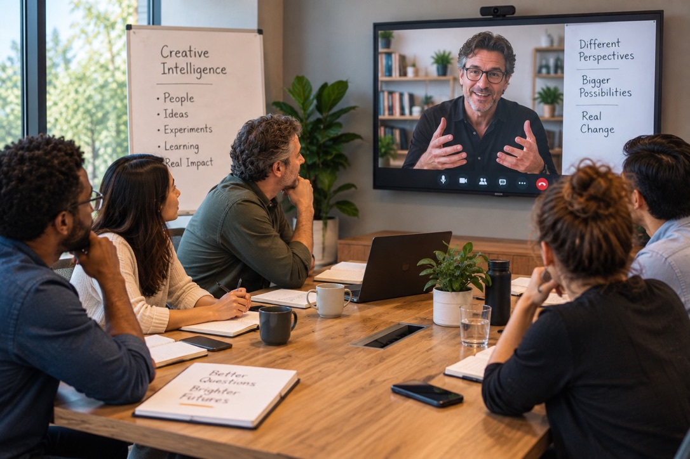

Bring one real challenge.
Leave with your next move.
Creative Intelligence is a proficiency that helps teams express different perspectives, discover possibilities, and ultimately align around what to do next.
When perspectives remain hidden, teams can become rigid. Decisions slow down, assumptions go unchallenged, and innovation becomes harder. Creative Intelligence makes those differences visible—not to eliminate them, but to use them as a source of learning, experimentation, and better decisions.
Alignment doesn't mean everyone agrees. It means the team understands its different perspectives well enough to agree on what is worth trying next.
I work with teams facing a real challenge where the answer is not already obvious. Together, we make different perspectives visible, identify what is worth trying next, and learn from what actually happens.

The problem is rarely a lack of ideas.
Teams often have more information, possibilities and opinions than they know what to do with.
The harder question is: Which direction is worth pursuing now?
Creative Intelligence is the capacity to learn what to do next. Instead of beginning with an outside answer, the process begins with the knowledge, experience and different perspectives already inside your team.
See the challenge differently.
Before we meet, team members respond independently to a small set of questions about one real organizational challenge.
Creative Intelligence technology helps make the team's collective intelligence visible — including areas of agreement, different perspectives, assumptions worth questioning and possibilities that may otherwise be overlooked.
During the first session
I facilitate the conversation around what the team is seeing, where perspectives differ, what may be assumed rather than known, and what appears worth trying.
The team leaves with a practical next move, a hypothesis, evidence to watch for, possible surprises and a clear review point.
Reality becomes part of the process.
The team puts its next move into practice.
This is not about proving the original idea was right. It is about discovering what actually happens.
Success matters. Failure matters. Surprise may matter most.
Learn from what happened.
We reconvene around the evidence rather than assumptions.
What happened?
Compare what actually occurred with what the team expected.
What surprised us?
Pay particular attention to unexpected signals and results.
What changed?
Identify how the team's understanding of the challenge has evolved.
What can we see now?
Surface possibilities that were not visible at the beginning.
That learning becomes the basis for the team's next move.
The technology doesn't make the decision.
Your people understand your organization.
Creative Intelligence technology supports the process by helping reveal patterns, differences, assumptions and emerging possibilities.
Your team makes the decision.
AI is not automatically the solution. Sometimes it may be part of the next move. Sometimes it may not. Creative Intelligence helps the team determine what is worth trying before choosing the tool.
Learning becomes part of how the team moves forward.
Challenge → Perspectives → Next Move → Action → What Happened → Learning → New Possibilities → Next Move
The objective is not simply to solve one challenge. It is to strengthen the team's capacity to learn what to do next.
You don't need a transformation program.
Bring one team and one real challenge. We'll start there.
Talk With Angelo